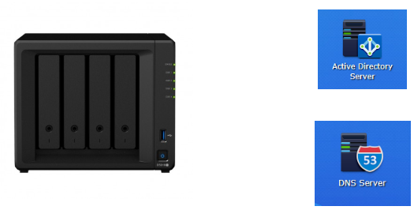
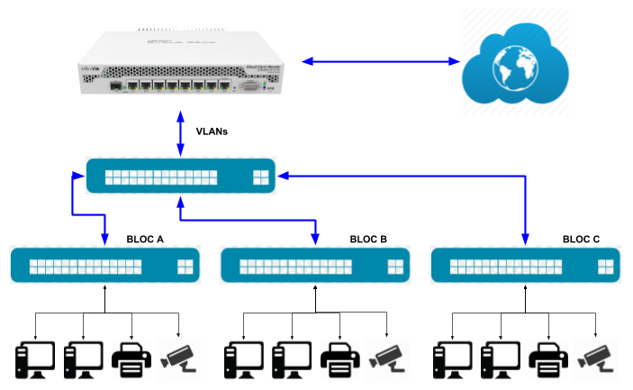

TIC
El NAS SYNOLOGY DS918+ actua com a controlador de domini, servidor DNS i servidor de fitxers. Per tot això, s’ha creat el domini iestecnologic.local:

En relació a la xarxa del centre, aquesta es gestiona mitjançant un router mikrotik CCR1009-7G-1C, el qual, a més de fer d’enrutador cap internet i entre les diferents VLANS creades, actua com a servidor DHCP:

TORNA
EMPRESA SIMULADA
TECNOLOGIC STORE SLS és una empresa simulada amb finalitats educatives, integrada dins la xarxa d’empreses simulades, creada per la Fundació INFORM.
La finalitat d’aquesta xarxa és contribuir en la formació dels alumnes dels cicles formatius d’administració (i d’altres ensenyaments), mitjançant la simulació de totes aquelles operacions econòmiques que realitza una empresa real (compres, vendes, contractació de serveis, pagaments, cobraments, contractació laboral, nòmines, liquidació d’impostos, liquidació de càrregues socials, gestió de la tresoreria, etc.). Així, l’alumnat pot practicar en cadascun dels circuits administratius que es generen.
Per tot això, cal tenir present que TECNOLOGIC STORE SLS no té personalitat jurídica, no existeix com a empresa, els productes comercialitzats son virtuals, i la documentació generada no té cap validesa legal.
TORNA